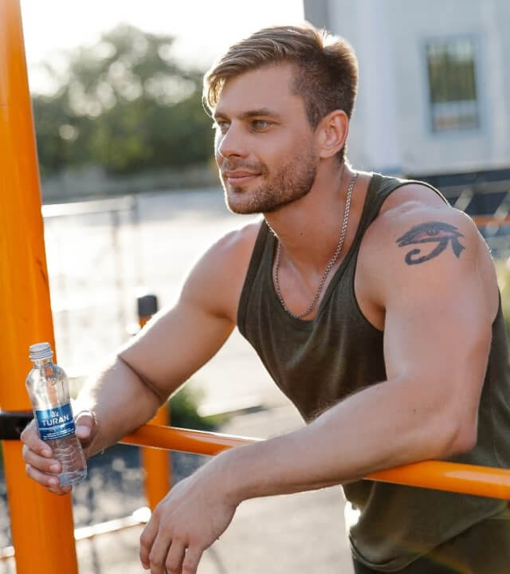
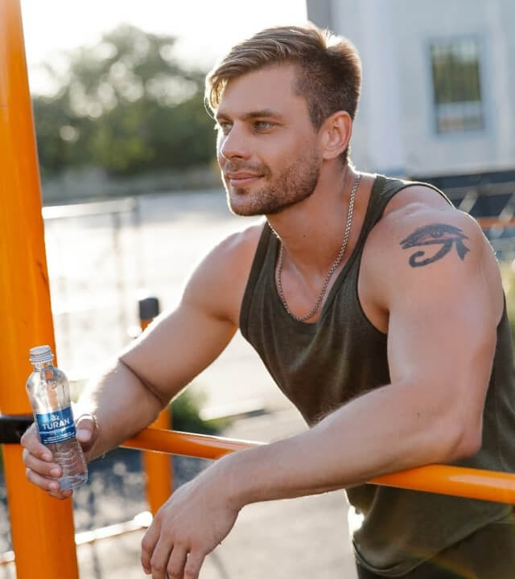

Создано
природой


TURAN – живая вода из экологически чистого региона Бурабай. Месторождение “Кусколь” – одно из пяти уникальных источников природной легкой воды в мире.
TURAN сбалансирована самой природой, а потому имеет природный pH-баланс 7,5 – идеальный для кислотно - щелочного равновесия организма. Разливается в бутылки в первозданном виде, проходя только процедуры фильтрации от горных пород и озонирования для вашей безопасности.
баланс 7,5
TURAN – вода с пониженным содержанием дейтерия (133 ppm), ускоряет обмен веществ, оказывает антиоксидантное воздействие на клетки, снижает риск болезней, приближающих старение организма. Во всем мире легкую воду используют для того, чтобы восстановить организм космонавтов после полетов. В Казахстане был проведен свой эксперимент, результаты которого подтвердили специалисты: легкая вода улучшает общее состояние организма!
 


Не вся вода одинаковая